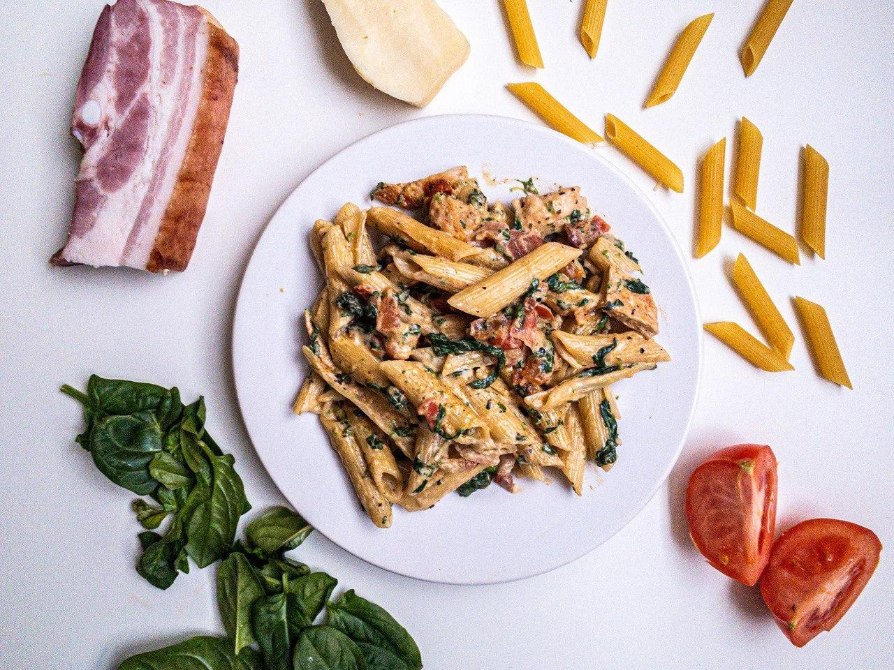
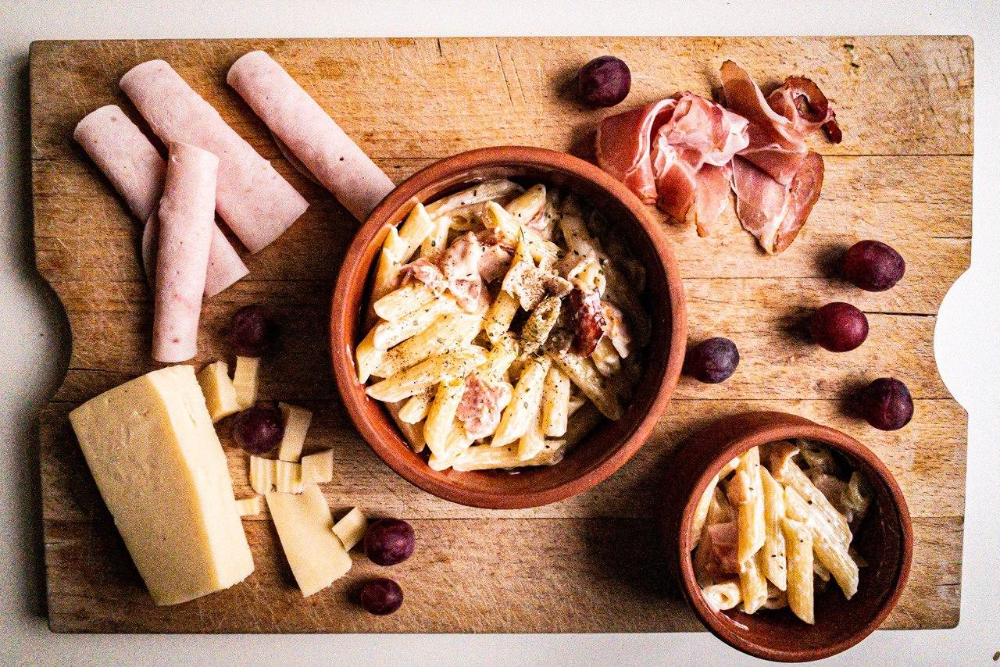
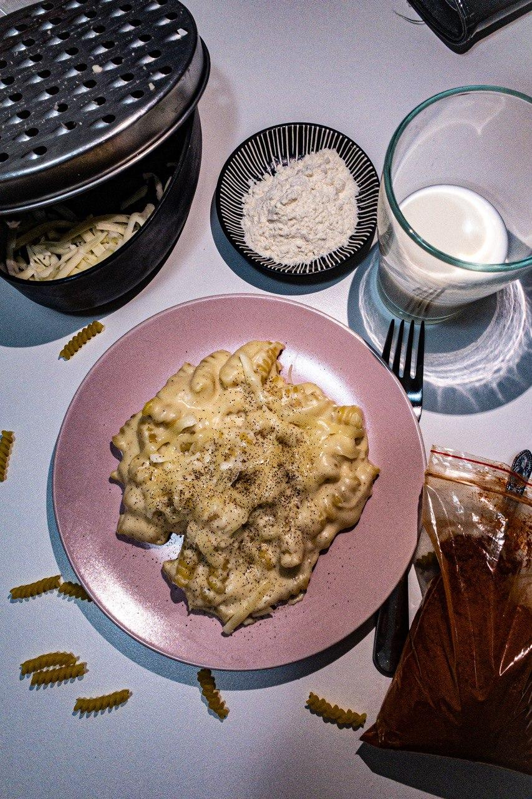

Tészták

Spenótos csirkés penne
Elkészítés: 30 perc
KÖZEPES
Elég népszerű recept az interneten, ezért én is elhoztam nektek a saját verziómat!
Recept

Hamis carbonara penne
Elkészítés: 20 perc
EGYSZERŰ
Ha semmi idő és ötletem akkor ezt csinálom. Lehetetlen megunni.
Recept

Mac and cheese
Elkészítés: 20 perc
EGYSZERŰ
Egy igazi amerikai étel, extra krémes és sajtos tészta. Na ettől biztos nem maradtok éhesek.
Recept